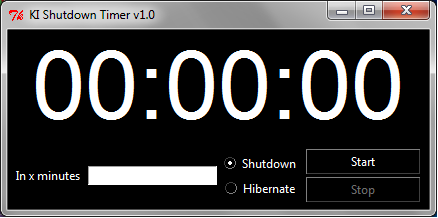

A simple GUI to the shutdown command
A simple GUI to the shutdown command of the system but with a timer. Know that soon you'll want to shutdown you computer? The shutdown timer can take care of that for you.

Enter the number of minutes for the timer into the textbox. Choose if you would like you computer to hibernate or shutdown. Click on the start button and watch the timer countdown.
Do you already have python 3 installed? Great than you can simply use the main.py file. Otherwise you can use the installer built with cx_Freeze which you can find in the folder dist.
No support for other systems yet.
MIT